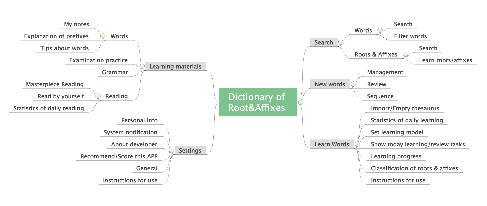
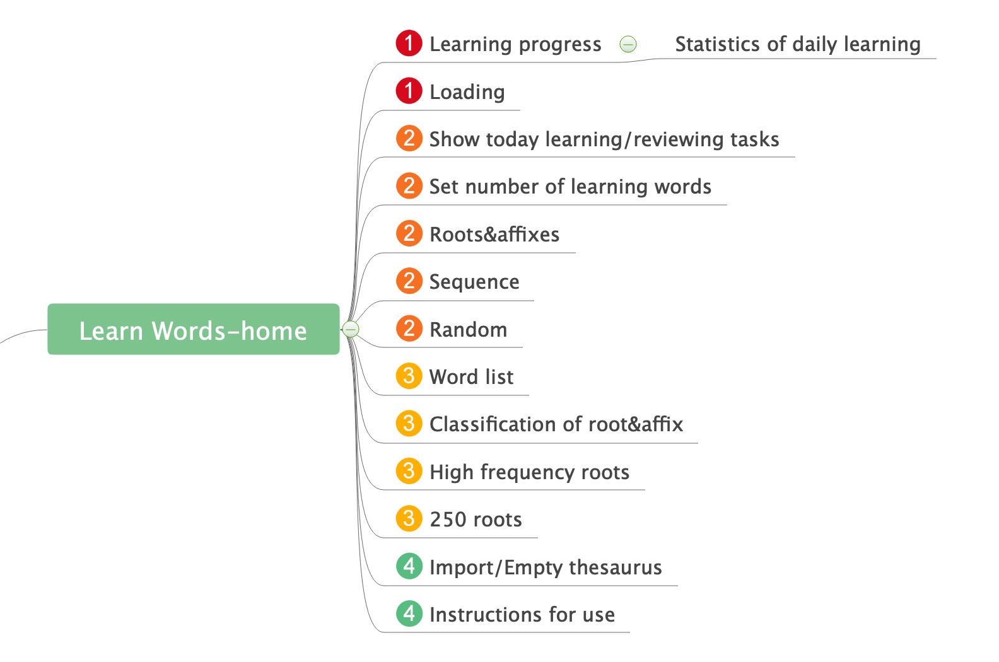

Introduction
Dictionary of Root and Affixes
- This app is developed by personal developer Weidong Gao. It aims to help English learners quickly understand, memorize or search English words by illustrating and analysing roots and affixes of words
- In App Store, this app has a high rating (4.9/5.0), and the number of reviews has exceeded 1.2w. It has a wide user base
The original intention of optimization
- Although this app provide a good way for me and other users to learn English, I think it still needs an improvement. when I using it, I feel that the functional architecture and interface of this app are kind of bad. It also can be seen from some reviews. Beautiful interface can help the product have a better user experience
- As one of the users, I hope to contribute to the optimization of the APP based on what I have learned. I contacted with Mr. Weidong Gao by WeChat (He left his WeChat account in this APP) and told him I wanted to provide a optimization plan for this APP. He was pleased and then our cooperation started
Optimization principle
- Considering the heavy workload of individual developer, this plan try NOT to change the main function points as much as possible, and not to add new ones. I may provide personal improvement suggestions, but thye do not serve as the optimization goal
How to optimize
- Combining personal experience, feedback from fellow students, and App Store reviews to find goal and direction of this optimization
- Analyze the interface and functions framework of the app, from the whole to a single interface
- Design low-fidelity prototypes, communicate with developers, and modify them
- Take other English learning APPs as reference to improve interface design
Goal&Direction
App Store reviews

Some users hope UI could be better and more beautiful
Classmates feedback
I did a simple interview with my three classmates who used this APP. What I learned from them is that some icons of this APP are strange and little difficult to understand. Additionally, some functions such as reading are put in "Settings" sector.
Summary
- Interface needs to have a better look
- Functions framework needs to be modified
- Considering interface is based on functions framework. Analyzing functions framework should be the first step. Then design low-fidelity prototypes. Finally, re-design interface
Functions Framework
Analysis

Pros
- The functions of this APP basically meet users' needs, and it can be seen from the App Store reviews
Cons
- In "personal info" sector, there are study materials such as grammar. Besides, there is reading functions in "Settings" sector. Obviously they are not suitable for the part.
- Both "Search Words" and "Roots&Affixes“ provide search function. They are similar but separated
Summary
- The "Settings" sector has more than 10 functions, while other sectors just have less than seven functions. The distribution of functions is unbalanced
- The classification of functions is not suitable. It would be difficult for users to find some functions.
Optimization
- Integrate "Search Words" and "Roots&Affixes"
- Create a new sector ("Learning Materials") to store learning and reading functions.

Before
After

Developer Feedback
I sent my optimization plan to Mr. Weidong Gao. And I received some feedback. He agreed to creat a new sector for learning and reading. While he did not think Integrating "Search Words" and "Roots&Affixes" is a good idea. And there are more statistics for searching words, this function should be put in homepage.
"Search" sector needs more discussion. So, at this stage, I and Mr. Weidong Gao decided to optimize other parts.
Low-fidelity Prototypes
- In addition to the whole functions framework, nearly every single interface has some problems that some function points are not classified in a right way
- On a page, focus of main functions is not obvious
- Icons did not play a guiding role for users. These wrong icons reduce the speed and efficiency of information transmission, increasing user learning costs
Here are three most frequently used and most modified interfaces. They would be used as cases to display my optimization result
- Case1 Learn words-home page
Analysis
Interface

Framework
- There are two key points in the interface, which are "learning progress-total 7260, learned 0" and "button-loading". Learning progress is not the first important function. Using "Learn new words" instead of "loading" would provide a better promopt for users to know that click this button then they can learn.
- Other products in the market would like to separate "learn new words" from "review old words". Users will have more freedom to decide whether to learn new words firsly or to review firstly
- "Show today learning/reviewing tasks", "Set number of learning words", "Sequence" and "Random" are used to set learning model by users
- "Classification of roots&affixes", "High Frequency roots", and "250 roots" actually are different classification methods. And these functions would not use frequently.
- "Word list" actually shows the learned words and new words, it and "learning progress" are kind of similar
Optimization
- Integrate similar functions and replan the area and visual focus of different functions on this interface
- According to re-designed functions framework, draw the low-fidelity prototype
Framework


Interface

- Case 2 Learn words-learning page&other relative pages
Analysis

- In order to jump from "Learning Page" to "Word Explanation Page", users can click on the blank space or the three function buttons below. However, there is no promopt to tell the user to they could do that.
- Click on the "roots or affixes" section would show "Roots&Affixes Choice Page", but there is no significant difference between the "roots or affixes" section and other section.
- Users could see more information about the word by clicking on it. But there is no prompt to guide users to do so
- The information transmission efficiency of "Note" icon is extremely low. And it is not suitable to put the notes icon at "Learning page"
Optimization
- Add suitable promopt information on the interface
- Replan the visual focus of the different functions on this interface
Learning Page
- Add "Click on the screen to see the word definition" message to the blank space
Before

After

Notes page
- Improve the visual focus effect of tab switching for a better navigation
Before

After
Word Explanation Page
- Use different font-color for roots and affixes in order to guide users to pay attention and try to click
- Use some area of the page for "Notes". Users can view most popular or own notes and add new notes directly through this page
- Add a message and button at the bottom of this page to tell users they could see more information on this word by clicking on this small button
Before
After

*Personal Suggestion
- It may be better to click on the "root and affix" section to directly jump to the "root and affix details page". It could minus the user selection step, and the operating hot zone would not be too small or inconvenient.
Before
After

Low-fidelity prototypes-Learning words flow chart
- Case3 Learning Materials (new section)
Analysis
Framework


Optimization
- Integrate these functions into the "Learning Materials" section
- Use tab for switching sections

Interface Optimization
Color Scheme
- The original version just has green, white, black and grey. And the green is not active enough. Considering when learning English, users would like to be encouraged or feel pleased. A more active green and some organe would be better
Main Color
Auxiliary Color

Learn words-home page
Orginial Version
Low-fidelity Prototype
Version 1

Version 2

Version 3

- Version 1
- Version 2
- Version 3
The difference between "Learn" and "Review" is not distinct. Additionally, this page has too much green. It would cause visual fatigue.
The green for "Learn" is too dark, not active. It would be better to use active color. (After all, learning sometimes could be boring and painful)
Choose orange to make the page more colorful and active! Orange color is auxiliary color and would not make the page look strange.
Other Pages